Flexbox
概述
在 flexbox 出现之前，布局的主力一直是 float 和 position，虽然他们表现得很是优秀，但是对于一些复杂或灵活的布局它们还是有些能力不及。比如下面这两种要求：
- 剩余宽度的自动分配
- 分布对齐（现在已经有了独立的 CSS Box Alignment Module）
为了能更好的解决这些问题，新的布局技术 flexbox 应时而生，当然其诞生也并非一帆风顺，而是经历了两次浴火焚身，最终才得以带领布局走向华丽新篇。
和从前的布局不一样，flexbox 的布局由两层结构组成，父元素设置 display: flex 形成 flex container，直接子元素就此成为 flex items，如下图：
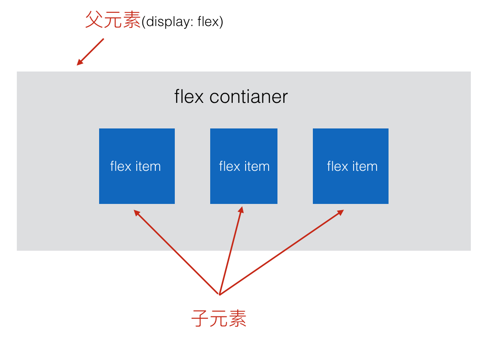
这样父子元素一组合就构成了 flex 布局模型，然后就可以通过给父子元素设置一些 CSS 属性，轻松实现一些以前 float 和 position 不好搞定的布局了。
下面是其一些优秀布局能力的体现：
- 水平垂直居中 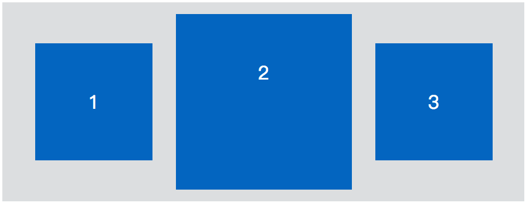
- 自动获得剩余宽度（第三个 item） 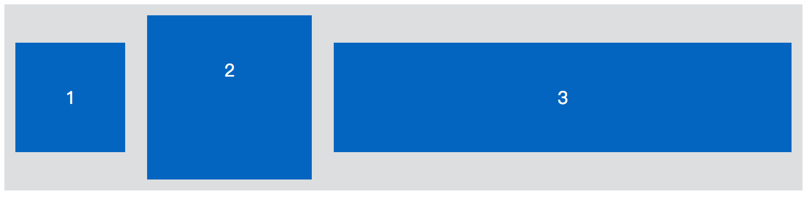
- 间距等分（item 之间的间距自动相等） 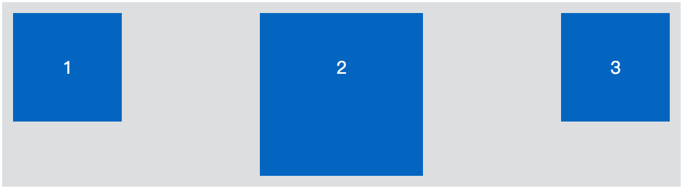
- 改变排列方向（横排变竖排，这个切换能力很关键，直接影响到我们后面的基本术语） 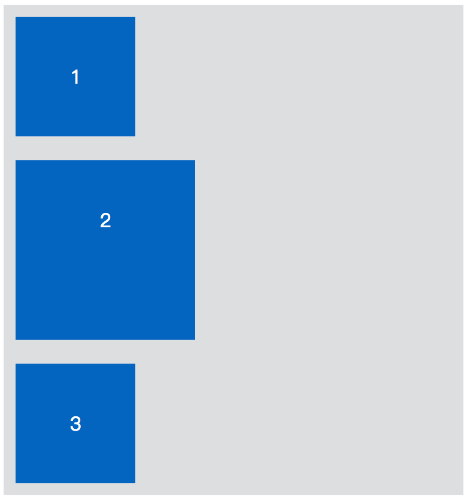
基本术语
在欣赏了 flexbox 的一些优秀能力之后，我们接着来看下它的基本术语。如下图：

- 给一个元素设置
display: flex;则该元素就会成为 flex container，而该元素的直接子元素就是 flex items； - 一般来说，分布对齐都是基于 x 轴或 y 轴的，但是因为 flexbox 布局可以纵横排列切换，如果纵横排列一换，x 轴和 y 轴就乱了。所以这里提出了主轴（main axis）和交叉轴（cross axis）的概念。主轴就是布局的方向，如果是横向排列，则主轴就是 x 轴，如果是纵向排列，则主轴就是 y 轴。
- 同样因为 flexbox 布局可以纵横切换，所以我们用主轴大小（main size） 和 交叉轴大小（cross size）来表示宽（width）高（height）。当为横向排列时，主轴大小就是宽，反之当为纵向排列时，主轴大小就是高。
- 不同于 x 轴和 y 轴是无线延伸的，我们的 flex container 是一个矩形容器，所以主轴和交叉轴都是有开始位置和结束位置的，如是横向排列主轴开始位置（main start）就是 left 边，结束位置（main end）就是 right 边，同样交叉轴的开始位置（cross start）就是 top 边，结束位置（cross end）就是 bottom 边。这样就可以设置 flex item 的分布与对齐，剩余空间分配了。
flex container 属性
display
定义一个 flex container，可以设置为 flex 或 inline-flex。
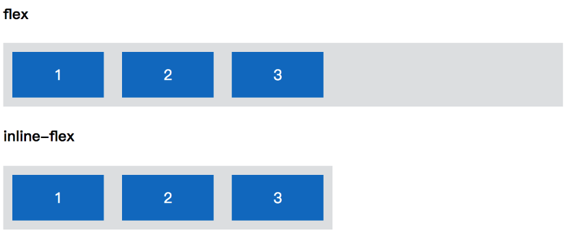
.parent {
display: flex | inline-flex;
}
flex-direction
用来设置主轴的方向，控制 flex items 排列方向的。默认为横向排列，取值有：row | row-reverse | column | column-reverse。（默认取值为第一个，如无特殊说明，以下属性默认取值都是第一个。）
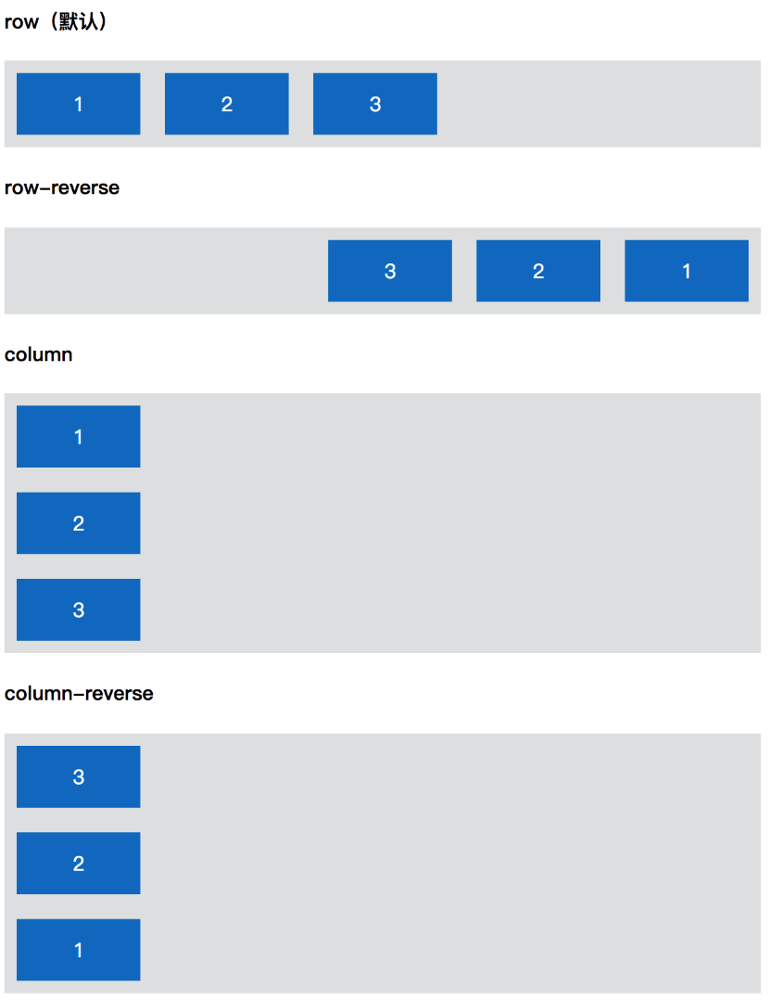
.parent {
flex-direction: row | row-reverse | column | column-reverse;
}
flex-wrap
用来设置 flex items 是否换行（在不缩放一行显示不下的情况下）。默认不换行，取值有：nowrap | wrap | wrap-reverse。
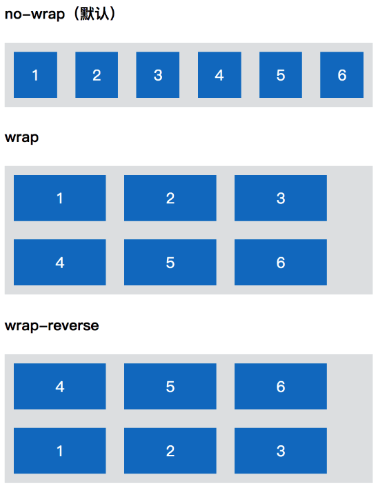
.parent {
flex-wrap: nowrap | wrap | wrap-reverse;
}
nowrap 为不换行，如果 flex container 的宽度不够，则会按照一定比例缩放 flex items， 以达到一行显示在 flex container 中，如上图中的 nowrap 就是缩放了 flex items。
flex-flow
上面 flex-direction 属性和 flex-wrap 属性的简写形式，默认为其两个属性的默认值。语法为：<flex-direction> || <flex-wrap>。简单示例如下：
.parent {
flex-flow: column wrap;
}
justify-content
定义 flex items 在主轴上的分布方式。默认从主轴开始位置排列，取值有：flex-start | flex-end | center | space-between | space-around。
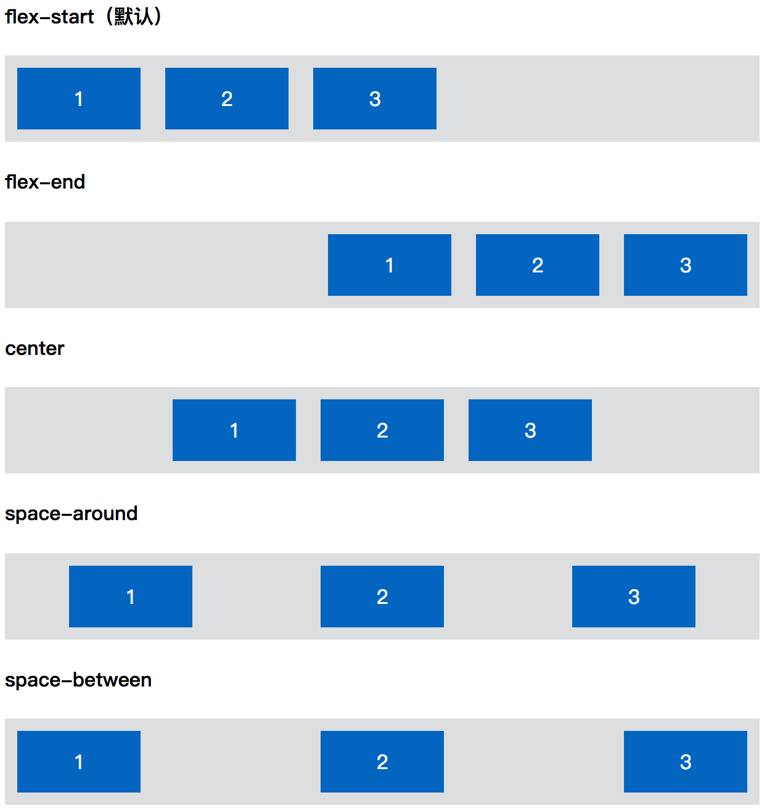
.parent {
justify-content: flex-start | flex-end | center | space-between | space-around;
}
flex-start表示主轴开始位置。flex-end表示主轴结束位置。center表示主轴中间位置。space-between表示 flex container 的多余空间在 flex items 之间平均分掉。space-around表示 flex container 的多余空间平均分配到每个 flex item 的左右（跟设置左右 margin 效果一样）。
align-items
定义 flex items 在交叉轴上的对齐方式。默认为拉伸，取值有：flex-start | flex-end | center | baseline | stretch。（stretch 为默认值）
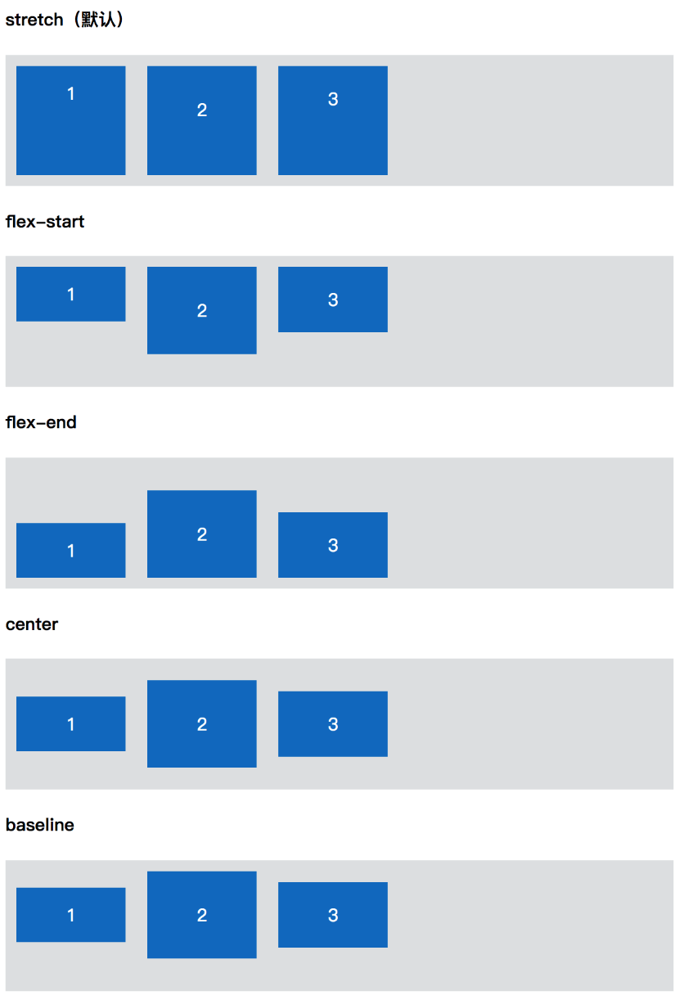
.parent {
align-items: flex-start | flex-end | center | baseline | stretch;
}
flex-start表示交叉轴开始位置。flex-end表示交叉轴结束位置。center表示交叉轴中间位置。baseline表示 flex items 中的文字 baseline。stretch表示所有 flex items 拉伸至 flex container 的交叉轴大小。
align-content
用来定义 flex items 显示为多行的时候，交叉轴上的分布方式。默认从交叉轴开始位置排列，取值有：flex-start | flex-end | center | space-between | space-around | stretch。
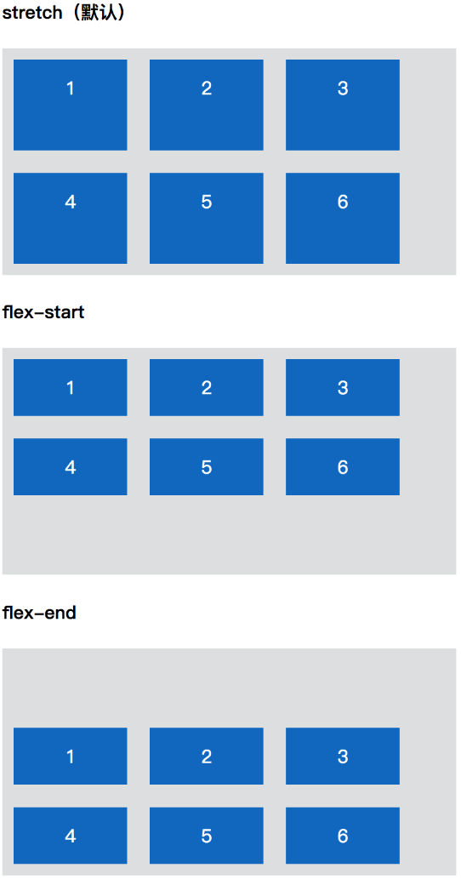 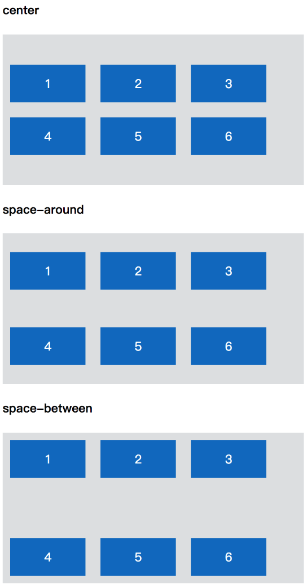
.parent {
align-content: flex-start | flex-end | center | space-between | space-around | stretch;
}
除了 stretch 外，其余的和 justify-content 的值是一样的，只是方向为交叉轴。而这里的 stretch 拉伸的标准为交叉轴剩余空间的分配。
flex item 属性
align-self
可以用来改变单个 flex item 的交叉轴对齐方式。默认 flex item 的交叉轴对齐方式是继承 flex container 的 align-items，取值有：auto | flex-start | flex-end | center | baseline | stretch。
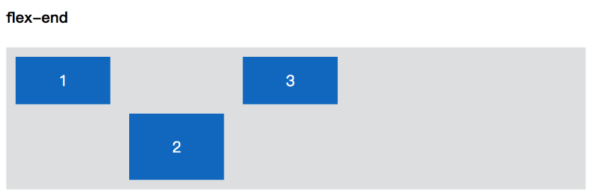
.child:nth-of-type(2) {
align-self: flex-end;
}
order
定义 flex item 的在页面上显示的排列顺序。数值越小，排列越靠前，默认为0，可以为负。取值为：<integer>。
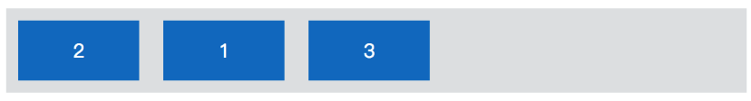
.child:nth-of-type(2) {
order: -1;
}
flex-grow
定义 flex item 在 flex container 中还存在剩余空间时的分配比例。默认为 0，即不分配任何空间，取值为：<number>。
.child {
flex-grow: 1;
}
.child:nth-of-type(2) {
flex-grow: 2;
}
关于剩余宽度如何分配，我们再继续深入下，如下图：
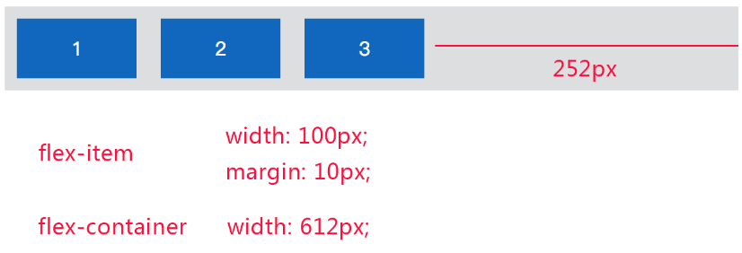
整个 flex container 的容器宽度为 612px，每个 flex item 占用的空间为 120px，那么 flex container 就还有 252px 未被占满，这就是剩余空间，其计算公式为：
剩余空间 = flex container 的宽度 - 所有 flex items 占用空间之和
而 flex-grow 则用来表示如何按比例分配剩余空间，其值表示分配到的份数，至于每份大小的计算公式为：
每份大小 = 剩余空间 / 所有 flex items 的 flex-grow 之和
如果我们给 flex items 的第一个和第三个设置 flex-grow: 1，而第二个设置 flex-grow: 2，则总共就是 4 （1+2+1）份，每份的大小就是：252px / 4 = 63px。这样第一个和第三个就会得到 63px 的额外宽度，而第二个则会得到 126px（63px * 2）的宽度。效果就会如下：
flex-shrink
定义 flex item 在 flex container 空间不足时如何缩放。默认为 1，取值为：<number>。
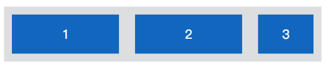
.child:nth-of-type(3) {
flex-shrink: 2;
}
其跟 flex-grow 是差不多的，只是一个用于分配剩余空间，一个用于超过空间时如何缩放。其需要缩放空间大小的计算公司为：
需要挤压的空间大小 = 所有 flex items 占用空间之和 - flex container 的宽度
然后按 flex-shrink 的份数进行计算，最后每个 flex item 的实际宽度 = 初始宽度 - 分配到的要缩放空间
flex-basis
定义 flex item 在分配或缩放空间时的的初始大小，默认为 auto，即由 flex item 内容决定，取值为：<length> | auto 。该属性跟设置 width 或 height 差不多，如果同时设置了 flex-basis 和 width 或 height， 其权重要大于 width 或 height。
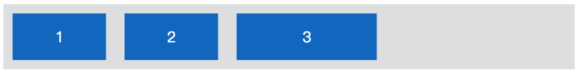
.child:nth-of-type(3) {
flex-basis: 150px;
}
flex
该属性是 flex-grow、flex-shrink、flex-basis 的简写，默认值即为其三个的默认值。语法为： none | [ <'flex-grow'> <'flex-shrink'>? || <'flex-basis'> ]
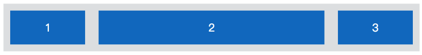
除此之外，该属性还有几个特别的值需要注意：
auto等同于1 1 auto;none等同于0 0 auto;<positive-number>等同于<positive-number> 1 0，如flex: 2等同于flex: 2 1 0。
这样整个 flexbox 相关属性就完了，所有的 demo 效果可移步：flexbox demo。需要注意的是，flex items 元素的 float、clear 和 vertical-align 属性都是无效的。
flexbox 兼容
功能性兼容
首先，flexbox 有三大版本：
- 标准版，上面的介绍的，目前多数浏览器都是标准版；
- 中间版，IE10 浏览器，仅此一个；
- 最古老的版本，安卓 4.3- 和 IOS 6，考虑到国内还有些手机厂商就是基于安卓4定制的系统，所以可能还是需要兼容的。
版本不一样，其属性的名字也是千差万别，但是其实现的功能还是有相同的。这里以标准版的功能为参考，说下最古老版本所欠缺的功能（中间版的功能跟标准版一样，就是属性名不一样而已）：
- 不支持的功能有
align-content、align-self、flex-wrap； justify-content属性欠缺space-around功能；flex属性只对应标准版的flex-grow属性，没有flex-shrink和flex-basis。
所以如果要兼容安卓 4.3-，一定不要使用这些不支持的功能。
在实际使用中，我们只负责写标准版的样式即可，其余的可以通过 autoprefix 来生成其他版本的兼容即可。
剩余空间分配兼容
在移动端上，我们有很多需要等分的情况，比如这种菜单：
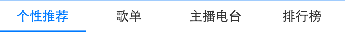
一般为了兼容，我们会直接给 flex item 设置 flex: 1;。这在标准浏览器中是没问题的，但是我们在安卓4.3- 上会发现并没有等分。
这是因为标准浏览器中 flex: 1; 实际等于的是 flex: 1 1 0;，也就是 flex-basis 被设置为0了，这样每个 flex item 初始的宽度其实就是 0，然后整个剩余宽度平分，当然就是等分的了。
但是对于古老的版本中，因为我们没有宽度设置，所以每个 flex item 的初始宽度是由它的内容决定的，这样字数不同当然也就初始宽度不同了，最后再把平分的剩余空间加上内容的初始宽度就是最后的宽度了。由于内容宽度不一样，最后的宽度也就不等了。所以为了使最后的宽度相等，我们可以先设置一个相等的初始宽度，如width: 1%;。
整个兼容代码如下：
.item {
flex: 1;
width: 1%; /* 兼容老版本 */
}
inline 元素无法布局的问题
如果子元素是 inline 元素，设置父元素为 display: flex; 的话，在安卓4.3- 以下将无法进行布局，解决办法也很简单就是将 inline 元素通过 display 设置为 block 或 inline-block。如下有一段代码：
<div class="flexbox">
<span class="item"></span>
<span class="item"></span>
<span class="item"></span>
</div>
.flexbox {
display: flex;
}
.item {
display: block; /* 转 inline 为 block 或 inline */
}
总结
如果说 float 已经是垂暮老人了，那么 flexbox 就是血气方刚正年轻了。如果你还不太了解，那是时候要把它磨砺成你的一柄好剑了。至于什么时候可以用到它，答案是到处可用（只要有不定宽度或分布对齐的时候都可以考虑）。